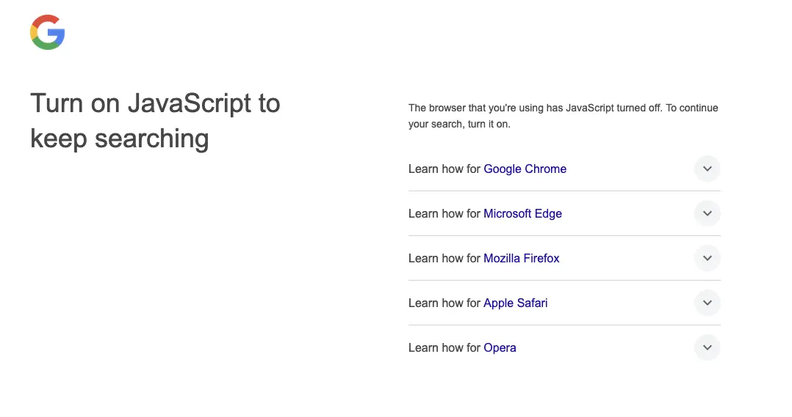

請開啟 JavaScript 以繼續搜尋
{kind=link}

Google: 請開啟 JavaScript 以繼續搜尋
我： 需要嗎？
Google: 不需要嗎？
我： 需要嗎？
Google: 不需要嗎？
我： 需要嗎？
Google: 別那麼認真嘛，不開你就別用咯
模仿 西遊記大結局之仙履奇緣 里的那段關於「愛一個人需要理由嗎」的對話 :P
從 2025 年 1 月開始，Google 搜索強制要求開啟 JavaScript 才能用，否則在搜索的時候會重定向到上面的引导頁。
我很久不用 Google 了，都在用 Kagi，也是 前陣子 才開始用 uBlock Origin 默認禁用頁面的 JavaScript，最近想用 Google 搜點東西，才發現一定要開 JavaScript 才能用。 Kagi、Bing、百度等都不需要 JavaScript 也能搜索，我不理解 Google 為什麼一定要開啟 JavaScript 才能用，找到的說法是「啟用 JavaScript 讓我們能更好地保護服務與使用者，免受機器人以及不斷演變的濫用與垃圾訊息形式的侵害，並提供最相關且最新的資訊。」1我看不出來怎麼更好的保护了使用者，強制開啟 JavaScript 反而更容易出現漏洞，也更容易利用 JavaScript 追踪用户，同時也拒絕了那些不願開啟 JavaScript 的用戶。之前反感 Google 的广告和擅自開啟的 AI 功能，現在又多了一條遠离它的理由，如果你還在用 Google，我也建議你考慮換個別的搜索引擎。
用 uBlock Origin 默認禁用頁面的 JavaScript 之後，我發現不少網站會沒法正常使用，有的我能理解，因為有一些複雜交互需要用到 JavaScript，但不少博客也不能閱讀，我認為是不應該的。博客最重要的是內容，JavaScript 應該用作增強體驗，而不是強制要求，在沒有 JavaScript 的情况下，應該至少保証內容可訪問和可讀。
你知道嗎，禁用 JavaScript 之後，一些付費墻會消失，因為它們是用 JavaScript 生成的。換句話說，禁用 JavaScript 之後，某種程度上可以讓你瀏覧的網頁更安靜、更干净。
在禁用 JavaScript 的條件下，我能看到几類博客：
- 一片空白或者就一直加載，沒有任何提示
- 無法閱讀，但會檢測沒有開啟 JavaScript (一般會用 <noscript>)，并給出相關提示
- 可以閱讀，但因為禁用 JavaScript 导致樣式有問題，部分功能受限 (例如切換明暗主題)
- 可以閱讀，樣式正常，部分功能受限
- 可以閱讀，樣式正常，部分功能受限，合理地处理了需要 JavaScript 的功能 (可能隱藏、可能給出提示、或者用 CSS 禁用)
對於前兩類，除非我很想看，否則我就關閉頁面了，這類博客也往往會加載大量 JavaScript 和其他資源，很多也不太注重內容的呈現，開啟 JavaScript 之後迎接你的可能是一堆動來動去的東西。
對於第 3 類樣式有問題的其實也是不應該的，JavaScript 不應該影響到 CSS，會出現樣式問題，可能是有的樣式依赖 JavaScript 生成，或者因為 JavaScript 加載失敗而阻塞了 CSS 的加載。
對於後 3 類，因為閲讀基本沒問題，我一般都會看完，而對第 5 類博客我會更喜歡，因為博客作者大概率是一個注重閲讀體驗的人。
如果你也是一位博客作者，可以禁用 JavaScript 看看自己博客的表現，然後考慮一下是否需要 JavaScript，是否需要那麼多 JavaScript、是否需要加載几 MB 甚至十几 MB 的資源。許多有風格的網站 其實不需要多少 JavaScript，讓網站好看大多數時候 CSS 就够了。最重要的還是內容，是你寫下的文字，以及讓你的文字能够被輕松閲讀到。
我的博客也依赖 一些 JavaScript，不過你禁用了也沒太大影響，如果有問題歡迎給我报錯 :)
我知道大多數人并不會沒事禁用 JavaScript，也不在乎網站是否運行 JavaScript，是否加載了大量資源，但我在乎，我能做到的就是選擇我用的服務、我看的網站，在自己的博客上做出實踐，以及發出一點聲音。
最後分享一些可以不需要 JavaScript 功能：
搜索
我原來是 使用 pagefind 實現博客搜索功能，但現在去掉了，改為用搜索引擎的功能，只要用一個表單就够了。你可以在 搜索 查看效果，下面是用 Kagi 搜索用到表單 HTML：
<search>
<form action="https://kagi.com/search">
<input type="search" name="q" value="site:taxodium.ink "/>
<button type="submit">搜索</button>
</form>
</search>
這個方法還有一個好处，搜索引擎默認可以支持多語言搜索，而 pagefind 等未必支持。
缺點是你得讓相關的搜索引擎收录󠄃你的博客，儘管我不推薦用 Google 搜索，但讓 Google 收录󠄃後，一般在大多數搜索引擎中就能搜到博客的內容，所以我還是會讓 Google 收录󠄃。
查看圖片
有的博客會實現灯箱，方便讀者查看圖片，但其實給圖片加個 連結，也够用了。
<figure>
<a href="images/album/20260716T193438--天使音乐__albumwall_image_汪川_20260521.webp">
<img src="images/album/20260716T193438--天使音乐__albumwall_image_汪川_20260521.webp"
alt="天使音乐 by 汪川 (2026)"
data-href="images/album/20260716T193438--天使音乐__albumwall_image_汪川_20260521.webp">
</a>
<figcaption><span class="figure-number">图2 </span>《天使音乐》専輯封面</figcaption>
</figure>
例如下面的圖片你點擊後會在當前 Tab 打開，瀏覧器自帯了放大縮小的功能，也能完全利用瀏覧器的空間展示圖片，缺點是看多張不太方便。

一些簡單的狀態判斷
在 Album Wall 我有很多的専輯封面，有的専輯是我寫文章分享過的，有的則沒有，我想讓用戶可以過濾分享過的専輯。只需要一個 checkbox 和一點 CSS：
<div class="filter">
<input type="checkbox" id="filter-shared"/>
<label for="filter-shared">仅展示已分享的专辑</label>
</div>
#content:has(#filter-shared:checked) figure:has(a[href*="images\/album"]) {
display: none;
}
原理是利用 :has() 判斷頁面中的 checkbox 是否被勾選，如果是則將未分享的専輯隱藏。
脚注:
Google begins requiring JavaScript for Google Search by Kyle Wiggers